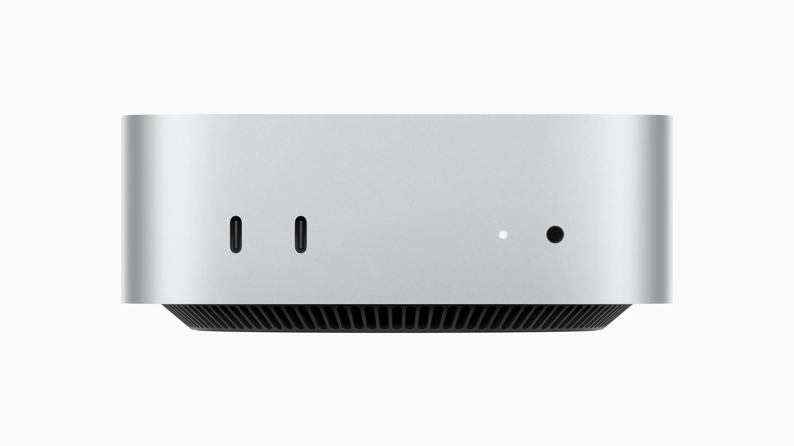
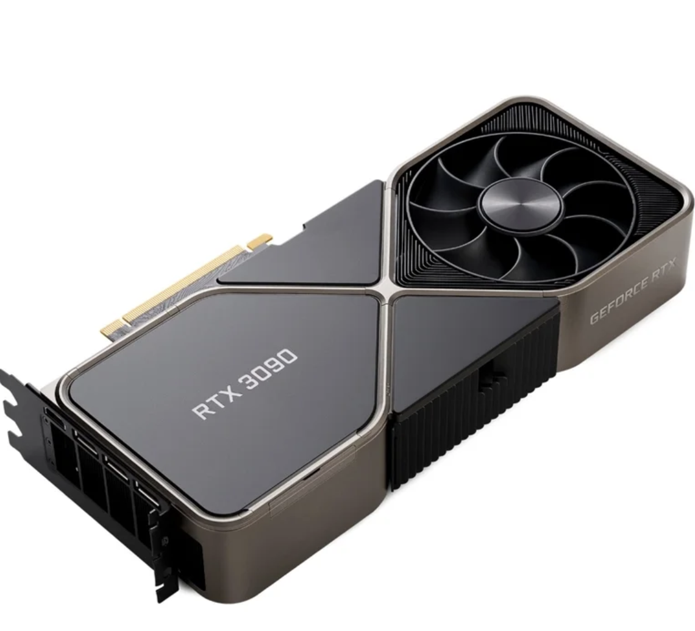
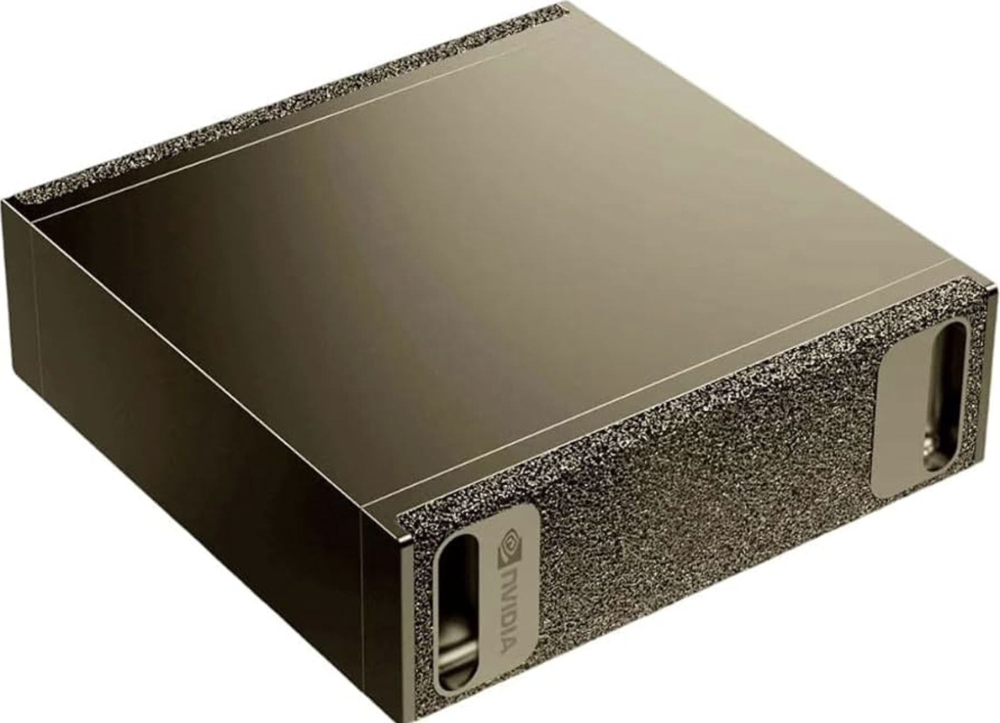
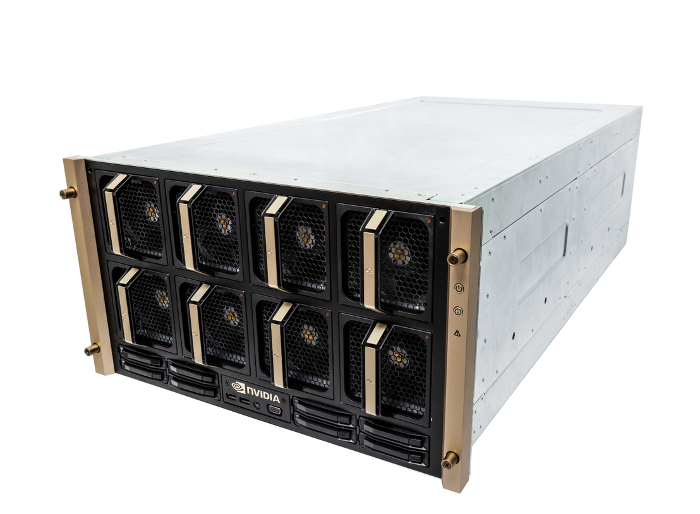

Running
Local Models
From Desktop to Data Center
Austin Kelsay
Arrows advance · 1 to 0 jumps · Home returns
From Desktop to Data Center
Austin Kelsay
01 / Speaker
Co-founder, Finite Computer — finite.computer
02 / Definitions
Every layer in this talk builds on these ideas.
A trained system that turns input into predicted output.
The learned numbers that encode a model's behavior.
The values counted in model sizes. 8B means roughly eight billion.
Lower-precision weights that use less memory.
The chunks of text a model reads and writes.
Running a trained model to produce an answer.
Software that loops around a model, uses tools, and takes actions.
How many requests the system handles at the same time.
The vocabulary stays stable while the stack expands.
02 / First contact
Pull a model. Run it. Talk to it. Ollama keeps the rest out of your way.
One abstraction. A fast way in.
03 / Models
Ollama hides the plumbing. It still asks you to pick a model. That last number is your first hint about its size.
More parameters usually need more memory. That is a clue, not a quality score.
You do not need to understand it yet. You just need to notice it.
04 / Pull it apart
You start choosing where the model comes from, which model you want, and which file fits your machine.
Where to pull
Hugging Face · OllamaOpen-weight examples: Qwen3 8B · Gemma 3 12B · Mistral Small 3.2 24BFile choices: BF16 · FP8 · GGUF · MLXThe model is now a set of choices.
07 / Architecture
Dense models run the same full network for every token. Mixture-of-Experts models route each token through a small set of expert blocks.
Dense
Every token takes the same full path.
Mixture of Experts
Only a few experts work on each token.
Fewer active parameters can cut compute. All of the weights still need a home.
08 / Apps
Start with the interface that fits your machine.
The app wraps the first version of your local stack.
09 / Models
Pull open weights from a model hub. Compare quality, speed, and size before you commit.
One place to download. One place to compare.
06 / Local stack
Under every response: a runtime, an OS, drivers, memory, and the machine beneath them.
The stack beneath the chat.
07 / Hardware
Discrete GPUs chase throughput and scale. Unified memory makes room for bigger models in one box.
GPU bros
VRAMbandwidth • CUDA • scale-outFast. Modular. Memory lives on the card.
Unified memory bros
ONE POOLCPU + GPU • shared memoryMore room in one box. Less plumbing.
Throughput or capacity? The workload picks the winner.


10 / Runtimes
One runtime fits a laptop. Another starts to matter when requests arrive together.
The runtime loads the model and turns requests into tokens.
11 / Agent
It owns the loop, tools, and memory. It calls inference through a stable serving contract.
The agent consumes inference.
13 / OpenAI-compatible
The OpenAI-compatible API is the common contract. Keep it fixed while the models, runtimes, and hardware behind it change.
/v1/responsesunified generation
POST/v1/chat/completionschat + tool calls
GET/v1/modelsavailable model IDs
POST/v1/embeddingsvectors
/v1/images/generationstext → image
POST/v1/audio/transcriptionsaudio → text
POST/v1/audio/translationsaudio → English
POST/v1/audio/speechtext → audio
One stable contract keeps every client portable.
12 / Agents
Change the base URL. Keep the agent.
The agent is the client. Your inference stack is the provider.
14 / Tool adapter
The agent sends one contract. The adapter turns it into the format each model expects, then parses the call on the way back.
The adapter translates. The agent executes.
15 / Shared service
At one request, the stack feels simple. At sixteen, traffic needs a gate and runtimes need to share the work.
The gateway controls traffic. The API fixes the contract. The adapter translates tools. The runtime runs the model.


18 / Dynamo
One endpoint in. The right worker gets the request.
This is the gateway running on our cluster.
19 / Stable core
The API and Dynamo stay put. Every other layer becomes a slot.
Two fixed layers. Six replaceable slots.

21 / Complete machine
One endpoint gives local agents capacity you control, without exposing which model or machine answered.
Start with one box. Add layers when the work asks for them.
26 / Resources
Running Local Models: From Desktop to Data Center
Slide 1 of 26